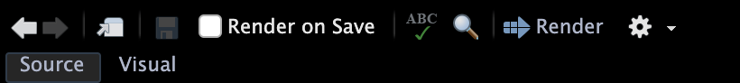
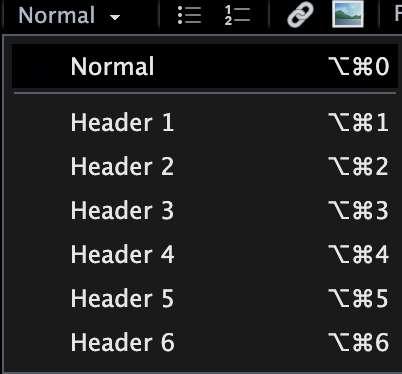
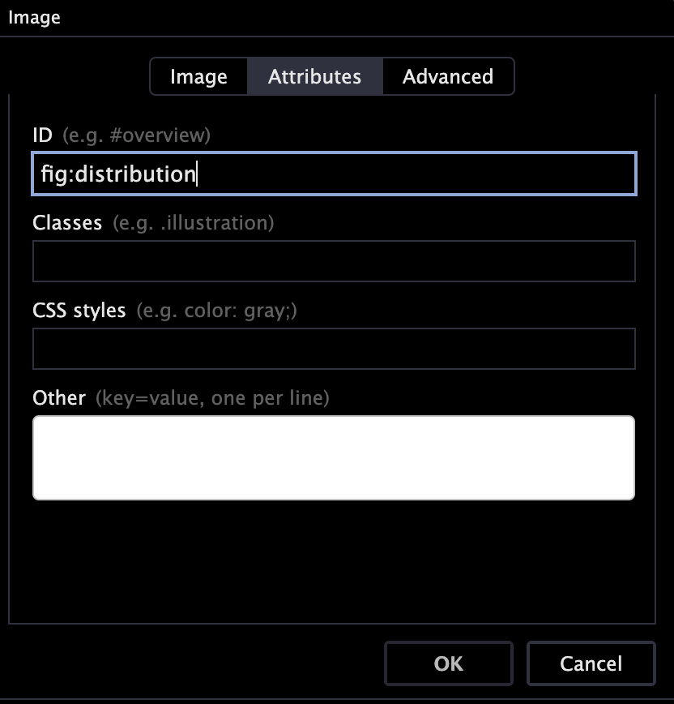

Intro to Quarto
What is Quarto?
Quarto is “an open-source scientific and technical publishing system”1 which is in each and every way superior to MS Word and Apple Pages. I am assuming that you have worked with R before when you read this. Otherwise, please head over to the Posit website and download both R and RStudio for your operating system. We will be using Quarto through R Studio.
With Quarto, you can write visually appealing documents, and seamlessly integrate any statistical output in the rendered PDF document. Quarto even creates a semi-automated list of references for you! So, this might be a very handy tool for essays, but certainly for your dissertation where you not only have to handle a long document, but also a considerable number of references. However, before you embark on writing your assessment in Quarto, please consult the module director whether they are happy to accept submissions in pdf format – not all module directors in PAIS will accept PDF documents.
Let me now explain in a bit more depth why you should switch from Word/Pages to Quarto.
Professional Writing in Political Science
Please read Professional Writing in Political Science: A Highly opinionated Essay by James A. Stimson. Stimson rejects Word and other similarly inclined word processing programs, as they are unable to achieve the standard required in professional academic writing. In the context of tables, for example, Stimson writes
You are a professional author. Learn to use the tools of authorship or choose a profession for which you are better suited.
I agree. And I wish more people, students and faculty members alike, would take note of this. The good news for you is that we will be using R on this module, and amongst the many other millions of things that this program enables us to do, it provides an interface to write with Quarto. All of my teaching materials (lecture slides, pdfs, and this companion) are set in Quarto. When we use it in R, the document will have essentially three parts:
- YAML
- Text
- Code Chunks
I will go through these in turn now. To follow along, I recommend you download the Assessment Template zip and open the .qmd file in which all of the below is already implemented. Don’t do anything with it, yet. But whilst you are reading what I am discussing here, try to match it to what you see in the .qmd file. If you want to jump ahead and render it into a pdf, please follow the instructions in the template section.
Once you open the essay template in R Studio, you will obtain a few more options in the task bar at the top which will allow you to turn this raw file into a pdf. More on this below, under “Rendering”.
It is possible that R will ask you to install the quarto package. Please do so, and also allow the installation of any dependencies if prompted.
YAML
YAML is an acronym for “Yet Another Markup Language”. This section of the document usually contains the settings for the entire document, such as the title, information about the bibliography (see below), and additional packages we might need to load. The YAML is gated by three horizontal dashes at the top and at the bottom. In the template, there is some more formatting going on outside of the YAML and finishes at line 152.
Text
Then, in line 155, follows the text which you can basically type as you always would. In order to use the familiar text formatting icons that turn text into headings, or into bold, change the font size, etc. you can switch the Quarto editor to “Visual” at the top. In the template, this is set to “Source” where Quarto would expect code to achieve all of these formatting operations.
Once you activate it, this task bar will appear at the top of the qmd file:
When you structure your document, it is essential that you format headings as such in the document and don’t just make the font larger. Otherwise, the automated table of contents will not work.

The visual editing bar will also allow you to include external pictures (external in the sense that you are not creating them in R whilst creating the document). For this purpose, click on the image icon in the visual editing bar, and a new window will pop up. Under the tab “Image” you can select the image from a file in your computer. Be sure to add a caption in this tab, as well. This will be printed underneath the image in your pdf. Then click the tab “Attributes”, and in the box “ID” enter a unique identifier for the image you are inserting. I usually use “fig” for figure, a colon, and then the name of the figure:

Once you have done that, click OK, and the image will appear where you have placed it. Because you created a caption and a label, you can now refer to this picture in the text, using the \ref{} function. When you write
As we can see in Figure \ref{fig:distribution} ...,
R will insert a cross reference which will get updated automatically when you render the document. This has the advantage that you will never have to say “the figure below” or the “figure above”. This is both imprecise and dangerous, as the position of the figure might change as you write your assessment.
You can also set beautiful equations in quarto Unless you really want to explain what conditional probabilities are in the the methods section of your assessment, I don’t think you will have to use this feature, however.
Code Chunks
Without writing your assessment in quarto, you will have to copy and paste the modelsummary table into your assessment document. This is not only extra work, but also invites human error. Because every time you change your models you also have to do that copy and paste job again.
When you are writing your assessment in quarto directly, you can seamlessly include your analysis into the document you are writing. You can hide all of the ugly code, and just show the beautiful modelsummary table at the end. How do you do that? To get started, please switch from the “Visual” mode back to “Source”. You can return to “Visual” editing mode once you are done with this.
Now, all you need to do is to insert a code chunk like this where you want the results table to appear in your document:
```{r, echo=FALSE, message=FALSE, warning=FALSE, error=FALSE}
# set your wd
setwd()
# load packages
library(modelsummary)
library(tinytable)
# load data
# carry out the analysis
# write the modelsummary code
modelsummary()
```
It is important that none of the code in this mini-script produces any visible output (everything needs to be carried out quietly and would not produce output in the console if executed from an R Script), as these results will otherwise appear in the final document. It almost goes without saying that the data set you are analysing will also have to be present in the folder that contains the qmd file2.
As a first step, use a regular RScript to carry out the analysis, as you can execute commands, and play around with this more easily (rather than rendering the entire thing every time).
Once you are happy with the output, create the chunk in the .qmd file and copy/paste your code.
List of References
OK, the biggest selling point of this is probably that Quarto will auto-generate a complete list of references by pressing a button. By the way, do you know what the difference is between a bibliography and a list of references?
A bibliography lists all sources you have consulted for a project regardless of whether they are cited in the text, whereas a list of references only lists what has been cited in the text.
This list of references must:
- be organised alphabetically by surname of author
- not be in bullet points
- be consistently formatted
- preferably be APA styled, but I’m not too precious as long as it’s consistent
I wrote earlier that generating the list of references is semi-automatic, because – as you will have come to realise by now – there is no such thing as a free lunch. The process requires a little preparation, and I am afraid some in-text code.
First, you need to create a separate file in which all of the sources you wish to cite are hosted – a so called .bib file. You can download the full .bib files for all modules I am directing here, but I am also providing you with a sample file in the template section. You can open the .bib file in R Studio. As you will see, the structure of each entry depends on the type of document you are citing: a book, an article in a journal, or a website, for example. Here is an entry for a book:
@book{agresti:2018,
author={Alan Agresti},
title={{Statistical Methods for the Social Sciences}},
publisher={Harlow: Pearson},
edition={Fifth Edition},
year={2018}}
In this entry, agresti:2018 is called the citation key. This is what you will use in the qmd file. For example when you type \citep{agresti:2018} this will be shown as [@agresti:2018] in the final document. In the template, I have enabled the following styles for including a reference in the text:
| Input | Output |
|---|---|
\citep{agresti:2018} |
(Agresti, 2018) |
\citep[p. 20]{agresti:2018} |
(Agresti, 2018, p. 20) |
\citep[see][p. 20]{agresti:2018} |
(Agresti, 2018, p. 20) |
\citet{agresti:2018} |
Agresti (2018) |
\citet[p. 20]{agresti:2018} |
Agresti (2018, p. 20) |
\citet[see][p. 20]{agresti:2018} |
see Agresti (2018, p. 20) |
When you render the essay template, Quarto will automatically put a list of references together and place it where it belongs3. But how do you render the document?
Rendering
To convert the qmd file to a pdf, you will have to “render” the qmd file. An icon with an arrow is located in the task bar at the top whenever you have an qmd file open. Click it to start the conversion.
When there is a mistake in your qmd file, such as an unbalanced bracket in a code chunk, for example, R will not render the pdf. Therefore, render your document regularly, so that you can trace the error more easily.
Assessment Template
In order to make your life as easy as possible, I have put together an Assessment Template.
You can download the Undergraduate version here as a zip file. For the MA version click here. Make sure you retain all files in the same folder going forward, as otherwise the document will not render:
- PAIS_Assessment_Template.qmd (or PAIS_Assessment_Template_MA.qmd)
- Warwick Crest
- Warwick Text
- references.bib.
Render this document without making any changes to ensure this works. For the Undergraduate version, it should look like this, for the MA version like this. Then you can start writing your assessment. Again, let me encourage you to render the document often, so that you can locate a potential mistake more easily should you receive an error message.
The Template Explained
There is quite a bit of formatting going on in the qmd file, and this is what all of this code achieves:
- Light grey background to improve readability (a little present to myself for marking)
- Font size 12, one-half spacing
- Main font: Latin Modern Sans Serif for legibility
- Maths font: Fira Maths, ditto
- Title page with module name, your registration number, submission date, and word count. No page number.
- Page numbering in Roman numerals for table of contents, list of figures, and list of tables
- Table of contents, list of figures, and list of tables are automatic
- Page numbering in Arabic numerals from the start of the text
- All captions are placed beneath figures and tables
- Fully adjustable size of
modelsummarytable (controlled via percentage of text width), so you can control the number of words the table “costs” - Automatic page break if there are fewer than seven lines after a (sub-)section heading
- Automatic List of References, formatted in APA (American Psychological Association) style
- Appendix after the List of References
- Code chunks are set by default not to show the code in the rendered file. Messages, warnings, and errors are suppressed
Assessment Submission
When it comes to submitting your assessment, please only submit the rendered pdf, and NOT the qmd file.
Please ensure that you have copied and pasted your complete RScript into the Appendix section of the template. By complete I mean a script that takes you (or anybody else) from loading the original data sets I provide to the output you include in the report you submit on Tabula. The script should be properly annotated to make your work reproducible and easy to follow.